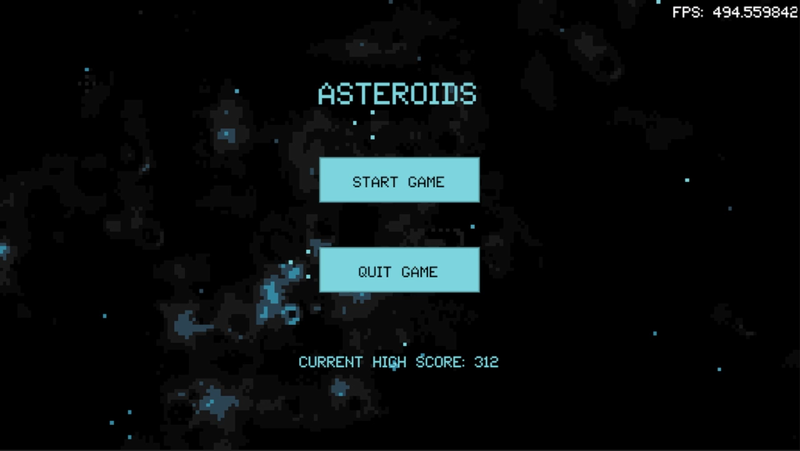
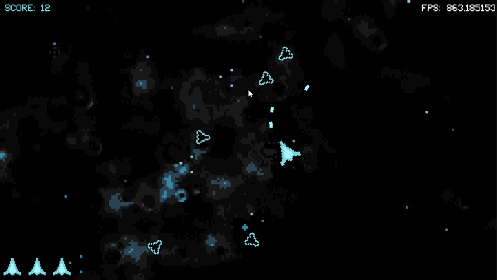
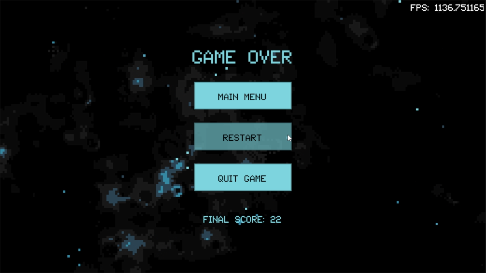
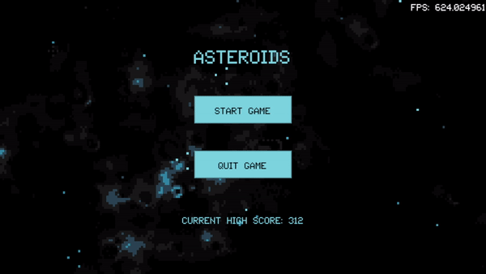

SkyEngine [C/C++]
Project Summary
SkyEngine is a custom 2D game engine built as a complete tool for general game development.
It supports 2D rendering via an OpenGL backend, a full input system, a spatial audio system, an
immediate-mode UI API, and a set of smaller utility libraries (PRNG, tilemaps, 2D collisions, etc.).
The goal is a simple, direct API for multi-platform game development with low-level control and
minimal compile times.
Currently planned additions include a threaded job system, a full rigid-body physics engine,
voxel-based 3D rendering, and a build system for exporting to the web via WebAssembly.
Example Projects
All of the projects below are created using no libraries apart from SkyEngine itself.
This project makes use of most major engine components to create an arcade shooter similar to
the classic "Galaga." The key difference: the player ship can rotate a full 360° and shoot in any
direction. The game features three scenes (main menu, game, game over), score tracking with a
persistent high score, three rotating background music tracks, sound effects, and a slow-motion
feature triggered by the spacebar.




Engine Architecture
Major Modules
The engine consists of four main compilation units:
-
Main Unit — Handles initialization, windowing, input, and
deinitialization. Uses a Unity build for the main module and user space. Compilation takes
approximately 0.8 seconds on a ThinkPad for a simple arcade game.
-
Rendering API Unit — Provides a simple 2D front-end built on
OpenGL. Sprite rendering is based on a transform similar to Unity's. Users can define custom
GLSL shaders and edit uniforms via the provided API.
-
Audio API Unit — Built on an OpenAL backend using a
listener-source model (similar to Unity's audio). Clips can be loaded, attached to sources,
and played back with properties like volume and looping adjusted dynamically.
-
UI API Unit — Immediate-mode UI (as opposed to retained-mode)
rendered on top of the game world in a camera-agnostic coordinate system. Built on Dear ImGui.
Supports buttons, image buttons, images, text, text input, and sliders, all stylable via a
centralized
UI_style struct.
Optional Libraries
A set of header-only libraries slot into the main compilation unit with negligible compile-time cost:
-
Collision System — Tests between points, circles, axis-aligned
boxes, and non-aligned boxes. Integrates with the transform system but neither depends on
the other.
-
Scene Management — Scenes are collections of function pointers.
A scene manager is initialized with a set of scenes and can switch between them by invoking
the desired scene ID, calling the necessary init and teardown callbacks.
-
Tilemap System — Custom uncompressed binary tilemap filetype with
a matching loader. Includes a GUI editor for creating tilemaps with custom tilesets, exported
to the custom format. The editor itself is written using SkyEngine.
-
Memory Allocators — Bump allocators, pool allocators, and a
free-list general allocator. These reserve memory upfront and reassign it at runtime, avoiding
context switches from
malloc/calloc.
-
PRNG — A linear congruential generator for fast int/float
generation, a slower xorshift128+ for higher-quality randomness, and 1D/2D simplex noise for
Brownian generation.